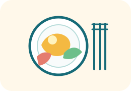

🥭Compote pommes-mangues
Ingrédients : purée et morceaux de mangues 50 %, purée de pommes 49,8 %, arôme naturel, antioxydant : acide ascorbique.
Observe des produits du quotidien, classe leurs ingrédients et découvre à quoi servent les additifs.
ÉTAPE 1
Observe les étiquettes, puis classe les ingrédients. Touche un ingrédient, puis sa catégorie. Pour retirer un ingrédient déjà placé, touche-le simplement.

ÉTAPE 2
Lis chaque situation et déduis la fonction recherchée. Aucun mot de la question ne donne directement la réponse : appuie-toi sur l'effet décrit.
ÉTAPE 3
Observe les trois listes ci-dessous. Cette fois, il faut chercher les indices dans les ingrédients avant de répondre.
Ingrédients : purée et morceaux de mangues 50 %, purée de pommes 49,8 %, arôme naturel, antioxydant : acide ascorbique.
Ingrédients : carottes 81 %, eau, huile d’olive, moutarde, vinaigre d’alcool, épices, jus d’orange concentré, sel, amidon transformé, épaississant : gomme xanthane, conservateur : sorbate de potassium.
Ingrédients : sucre, eau, colorants : E150b, E133, arôme naturel de menthe.
ÉTAPE 4 · TRACE ÉCRITE
Touche un mot, puis le trou correspondant. Pour retirer un mot déjà placé, touche simplement le trou.
On peut classer les aliments en catégories :
1-Les
:
ce sont des aliments qui viennent directement de la
(agriculture ou élevage).
Exemples : une pomme, du lait, une
.
2-Les
:
ce sont des aliments
à partir de produits agricoles.
Exemples : du
,
du yaourt, de la compote.
3-Les
:
ce sont des produits fabriqués par l’
et ajoutés aux aliments. Ils servent à
plus longtemps, à donner du
,
de la
ou une
.
Exemples : conservateurs,
,
épaississants.
MISSION RÉUSSIE
Tu sais distinguer produits agricoles, produits transformés et additifs, expliquer le rôle des additifs et compléter la trace écrite.